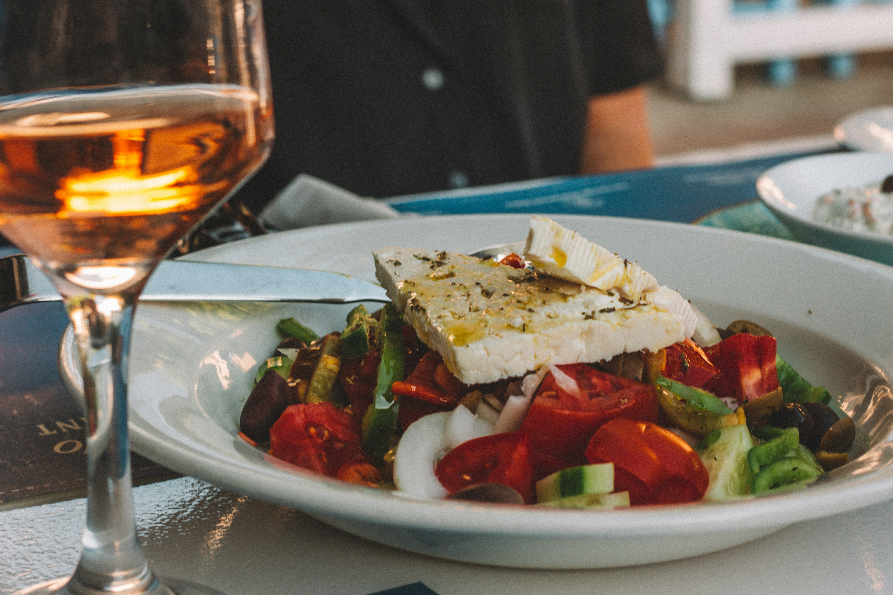

Greek Salad
Back to Recipes

Description
Imagine a vibrant mosaic of color and flavor, a taste of the sun-drenched Mediterranean in every single bite. This is the essence of a classic Greek salad. It begins with a foundation of jewel-like tomatoes, ripened to a deep, luscious red and bursting with sweet, sun-kissed juice. Crisp, cool slices of cucumber provide a refreshing, watery crunch, perfectly complemented by the sharp, zesty bite of thinly sliced red onion. Briny, Kalamata olives, with their rich, fruity bitterness and deep purple hue, are scattered throughout like hidden treasures. Presiding over this garden of freshness is a generous slab of creamy, tangy feta cheese. Left beautifully whole or crumbled into snowy chunks, it offers a salty, savory counterpoint that ties everything together. The entire creation is then bathed in a simple, yet sublime, dressing of golden, extra-virgin olive oil and a splash of bright red wine vinegar, seasoned with a fragrant pinch of oregano. This isn't a salad that's weighed down; it's a celebration of pure, unadulterated ingredients at their peak. Each forkful is a perfect harmony of textures and tastes—crisp, creamy, juicy, and salty—a refreshingly rustic and utterly delicious escape to the Greek islands.
Ingredients
- 3-4 medium-sized, very ripe tomatoes (e.g., vine-ripe, beefsteak, or a mix of heirloom varieties), cut into irregular wedges or large chunks.
- 1 large English cucumber or 2-3 smaller Persian cucumbers, partially peeled (leaving some strips of skin) and sliced into thick half-moons or chunks (about 1/2 to 3/4 inch thick).
- 1/2 a medium red onion, very thinly sliced into rings or half-moons.
- 1/2 a medium green bell pepper, cored and sliced into thin rings or strips.
- 1 block (approximately 6-8 oz or 170-225g) of authentic Greek feta cheese (preferably sheep's milk feta, packed in brine). Do not crumble; place the block directly on top of the salad.
- 1/2 cup (about 80-100g) pitted Kalamata olives.
- 1/4 to 1/3 cup (60-80 ml) high-quality, robust extra virgin olive oil. This is the primary "dressing."
- 1-2 teaspoons dried Greek oregano, crumbled between your palms over the salad.
- Salt to taste (start with 1/2 teaspoon and adjust), keeping in mind the saltiness of the feta and olives.
- Freshly ground black pepper to taste (optional).
- 1-2 tablespoons red wine vinegar (optional, for added tang).
- Crusty bread or pita, for serving (optional).
Steps
- Wash and cut the tomatoes into large, irregular wedges or chunky pieces. Place them directly into your serving bowl.
- Wash the cucumber. Using a vegetable peeler, peel alternating strips of skin off the cucumber (this adds visual appeal and texture). Slice the cucumber into thick half-moons or chunky rounds (about 1/2 to 3/4 inch thick). Add to the bowl with the tomatoes.
- Peel and very thinly slice the red onion into rings or half-moons. Add to the bowl.
- Wash the bell pepper, remove the stem and seeds, and slice it into thin rings or strips. Add to the bowl.
- Scatter the pitted Kalamata olives evenly over the prepared vegetables in the bowl. If using capers, scatter them now too.
- Carefully drain the block of feta cheese. Gently place the entire block (or a large slab if your block is too big) directly on top of the vegetables and olives in the center of the bowl. Do not crumble it into the salad.
- Take the dried Greek oregano and crumble it between your palms directly over the feta and the rest of the salad. Be generous!
- Sprinkle sea salt over the entire salad, adjusting to your taste. Remember the feta and olives are already salty.
- Drizzle a generous amount of high-quality extra virgin olive oil all over the salad, ensuring some runs over the feta and into the vegetables. This is your primary "dressing."
- Freshly ground black pepper to taste (optional).
- 1-2 tablespoons red wine vinegar (optional, for added tang).
- Crusty bread or pita, for serving (optional).